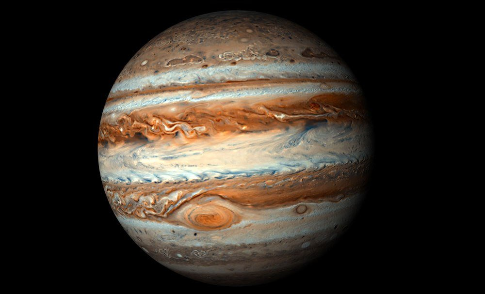

Юпитер — самая массивная планета Солнечной системы.


Юпитер как и все гиганты состоит в основном из смеси газов. Газовый гигант в 2,5 раза более массивный, чем все планеты вместе взятые или в 317 раз больше Земли.
Юпитер в Солнечной системе самый большой, и у него 79 спутников.
У Юпитера есть кольца. Они не такие большие и красивые как у Сатурна, потому что тоньше и слабее. Несмотря на то, что планета Юпитер размер имеет поистине огромный,
ему не хватило массы, чтобы стать полноценной звездой.
Атмосфера планеты огромна, ее химический состав это 90% водорода и 10% гелия.
У Юпитера нет твердой поверхности, поэтому за некую условную «поверхность» ученые определяют нижнюю границу его атмосферы в точке,
где давление составляет 1 бар. Температура атмосферы в этой точке,
как и у Земли, уменьшается с высотой, пока не достигнет минимума.
Тропопауза определяет границу между тропосферой и стратосферой — это около 50 км над условной «поверхностью» планеты.
Стратосфера
Стратосфера поднимается на высоту 320 км, и давление продолжает снижаться, в то время как температура возрастает. Эта высота отмечает границу между стратосферой и термосферой.
Температура термосферы поднимается до 1000 К на высоте 1000 км.
Все облака и штормы, которые мы можем видеть, расположены в нижней части тропосферы и формируются из аммиака, сероводорода и воды. Видимый рельеф поверхности формирует нижний слой облачности.
Верхний слой облаков содержит лед из аммиака. Нижние облака состоят из гидросульфида аммония. Вода образует облака расположенные ниже плотных слоев облаков. Атмосфера постепенно и плавно переходит в океан,
который перетекает в металлический водород.
Атмосфера планеты является крупнейшей в Солнечной системе и состоит в основном из водорода и гелия.
Состав
Юпитер содержит небольшие количества таких соединений как метан, аммиак, сероводород и вода.
Эта смесь химических соединений и элементов, вносит свой вклад в формирование красочных облаков, которые мы можем наблюдать в телескопы.
Однозначно сказать какого цвета Юпитер нельзя, но примерно он рыже-белый в полоску.
Облака аммиака, которые видны в атмосфере планеты, образуют совокупность параллельных полос.
Темные полосы называют поясами и чередуются с светлым, которые известны как зоны. Это зоны состоят из аммиака.
Пока не известно, что вызывает темный цвет полос.
Почему Юпитер не звезда?
Ему не хватает массы и тепла, необходимого для начала слияния атомов водорода в гелий, поэтому он не может стать звездой. Ученые подсчитали,
что Юпитер должен увеличить свою текущую массу, примерно, в 80 раз для того, чтобы зажечь термоядерный синтез. Но тем не менее,
планета выделяет тепло за счет гравитационного сжатия.
Это сокращение объема, в конечном итоге и нагревает планету.
Вращение
Наш газовый гигант — самая быстро вращающаяся планета из всех в Солнечной системе, он совершает один оборот вокруг своей оси каждые 9,9 часа.
В отличие от внутренних планет Земной группы, Юпитер представляет собой шар, состоящий почти полностью из водорода и гелия. В отличие от Марса или Меркурия,
он не имеет поверхности, которую можно отслеживать для измерения скорости вращения, у него нет ни кратеров ни гор, которые появляются в поле зрения после определенного количества времени.
Быстрое вращение приводит к разнице экваториального и полярного радиусов. Вместо того чтобы быть похожим на сферу, из-за быстрого вращения, планета выглядит как раздавленный мяч.
Выпуклость экватора видна даже в небольшие любительские телескопы.
Полярный радиус планеты равен 66,800 км, а экваториальный составляет 71,500 км. Экваториальный радиус планеты на 4700 км больше полярного.
Несмотря на то, что планета представляет собой шар из газа, он вращается дифференциально, есть вращение занимает разное количество времени в зависимости от того, где вы.
Вращение на его полюсах занимает на 5 минут дольше, чем на экваторе.
Поэтому часто упоминаемый период вращения 9,9 часов, на самом деле, средняя сумма для всей планеты.
Системы отсчета вращения
Ученые фактически используют три различные системы для расчета вращения планеты. Первая система для широты 10 градусов к северу и к югу от экватора — вращение за 9 часов 50 минут.
Вторая, для широт севернее и южнее этого региона, где скорость вращения составляет 9 часов 55 минут. Эти показатели измеряются для конкретной бури, которая находится в поле зрения.
Третья система измеряет скорость вращения магнитосферы и, как правило, считается официальной скоростью вращения.
Строение
Юпитер имеет ядро, которое содержит некоторое количество скальных пород и металлический водород, который принимает эту необычную форму под чудовищным давлением.
Последние данные указывают на то, что гигант содержит плотное ядро, которое, как считается, окружено слоем жидкого металлического водорода и гелия,
а в наружном слое преобладает молекулярный водород. Гравитационные измерения указывают массу ядра от 12 до 45 масс Земли. Ядро планеты составляет около 3-15% от общей массы планеты.
Температура
Его температура, учитывая, как далеко находится он от Солнца, гораздо ниже чем на Земле.
Внешние края атмосферы Юпитера намного холоднее, чем в центральной области. Температура в атмосфере равняется -145 градусов по Цельсию, а интенсивное атмосферное давление способствуют повышению температуры, по мере спуска.
Погрузившись на несколько сотен километров вглубь планеты – водород становится главным ее компонентом, он достаточно горяч, чтобы превратиться в жидкость (т.к. давление большое). Температура в этот момент, как полагают,
более 9,700 C. Слой плотного металлического водорода простирается до 78% от радиуса планеты. Возле самого центра планеты, ученые полагают, что температура может достигать 35,500 C. Между холодными облаками и расплавленными
нижними отделами находится внутренняя атмосфера из водорода. Во внутренней атмосфере температура водорода такова, что границы между жидкой и газовой фазами у него нет.
Расплавленные внутренние области планеты нагревают остальную часть планеты за счет конвекции, поэтому гигант выделяет больше тепла, чем получает от Солнца. Штормы и сильные ветры смешивают холодный воздух и теплый воздух как и на Земле.
Космический корабль Галилео наблюдал ветра имеющие скорость свыше 600 км в час. Одно из отличий от Земли в том, что на планете существуют струйные течения, которые управляют бурями и ветрами, они приводятся в движение собственным теплом планеты.
Галилеевы спутники
- Ганимед
- Европа
- Ио
- Каллисто
Группа Амальтея – внутренние спутники
- Амальтея
- Метида
- Фива
- Адрастея
На настоящий момент их начитывается 80.
Спутники Юпитера